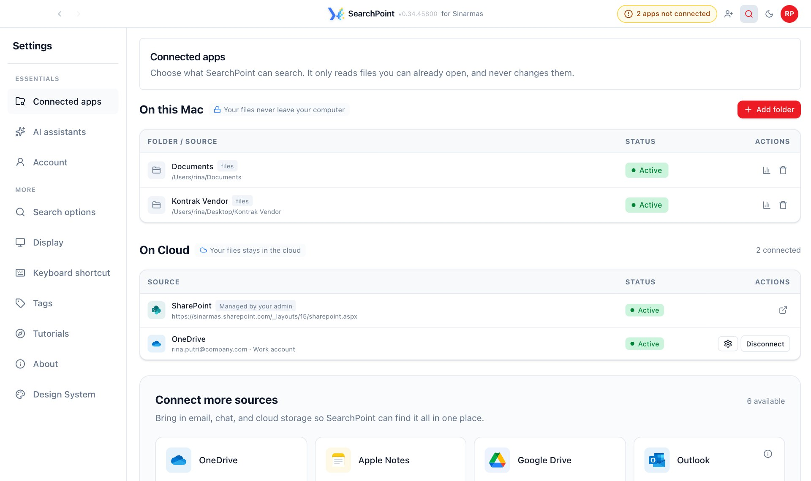
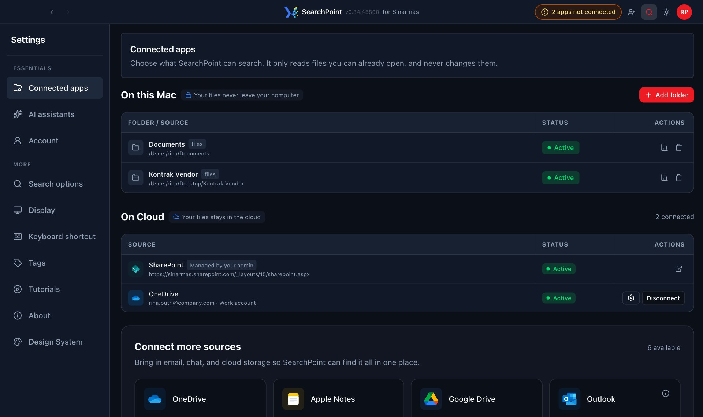

Your files
Your files stay where they are
SearchPoint never moves, copies or edits your files. To search them, it keeps only a record of what is inside, on company servers.
SearchPoint connects OneDrive, SharePoint, Outlook, OneNote and your laptop folders in one secure path. Ask ChatGPT, Claude, Gemini or OneAI, or search them yourself in one place. Only files you can already open.
See it work · pick your role
Without SearchPoint, files are downloaded from each app and uploaded to the AI, or every AI is wired to every app one by one. With SearchPoint, the AI reads straight from the source, and permissions stay as they are.
Connect, search, then ask your AI. Pick a step to see the real app screen.


12Nothing moves. Your files stay where they are, with the same permissions they have today. Sign in once with your work account.
The list keeps growing. Need SearchPoint to connect to another app? Contact our team and we will set it up for you.
The six things people ask most, answered in a line each.
SearchPoint never moves, copies or edits your files. To search them, it keeps only a record of what is inside, on company servers.
Permissions match SharePoint, OneDrive and Outlook exactly. If you cannot open it there, it will not show up here.
Your AI only sees the files that fit your question, and cannot edit, delete or share anything.
The parts of a file sent to your AI are used only to answer that question, under your company's AI policy.
Choose which apps and folders to connect, and switch off AI access or disconnect any time in Settings.
Managed by IT on company servers, with sign-in through your Microsoft work account. Not a public service.
For IT teams: architecture, encryption and audit details are in the FAQ →
Straight answers for everyone. The last two are for IT and Security.
Only if they can already open them in OneDrive or SharePoint. Files in your own OneDrive show up for someone else only after you allow it. In the app, every file shows who else can find it.
No. From Outlook, SearchPoint only searches document attachments and your calendar events. The text of your emails and your contacts are never read.
SearchPoint keeps in step with the source. When a file is deleted, moved or locked down there, it drops out of your results, and your permissions are checked again on every search.
No. Files stay where they are. You sign in with your work account and choose which apps and which laptop folders to connect. You can disconnect any of them later.
No. Once your apps are connected, SearchPoint keeps everything in sync in the background. Open it when you need to find something, or press your shortcut from any app.
An AI assistant answers questions; SearchPoint gives it your files. Connect them and ChatGPT, Claude, Gemini or OneAI can answer from your work files, showing which file each answer came from.
File contents are read briefly to build a search index: names, keywords and short text passages, kept on company servers. Whole files are not copied. Every search is checked against the user's current permissions.
Self-hosted on company VMs and network, with sign-in through Microsoft Entra ID. Secrets are kept in HashiCorp Vault and connections use mTLS. The SearchPoint team can share the full architecture.
For everyone at your company. Sign in with your work account, connect your apps, and you are set.